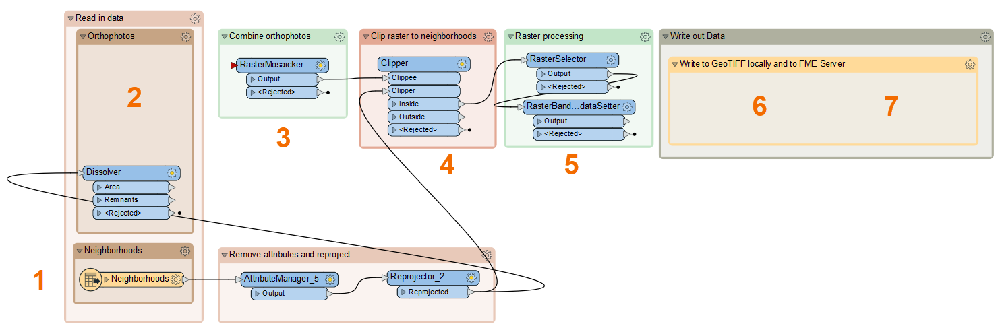
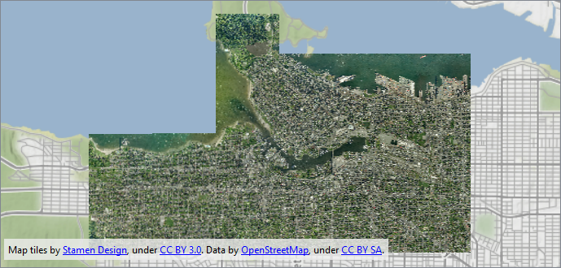
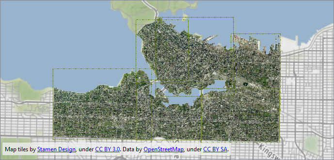
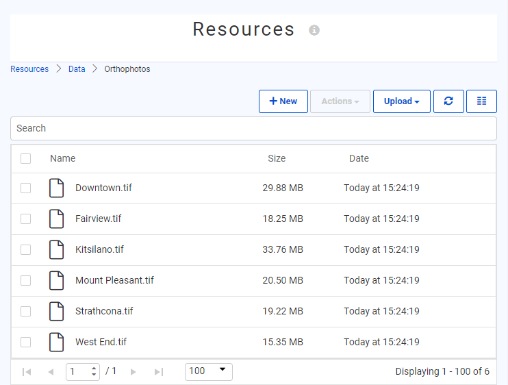

After completing this unit, you’ll be able to:
In this exercise, we'll look at some common use cases for the FeatureReader and FeatureWriter and use a Connector transformer.
The scenario is we have a folder full of orthophotos in GeoTIFF format. However, we want to extract the orthophotos as individual rasters covering the area of several downtown neighborhoods.
Open the starting workspace in FME Workbench (2022.1 or later).
This workspace is already mostly configured, but we need to add a FeatureReader and FeatureWriter to accomplish this task. If you examine the workspace, you'll see the following:

Add a FeatureReader to the Orthophotos bookmark above the Dissolver. Connect the Dissolver:Area port to the FeatureReader Initiator port.
Double-click the FeatureReader to open it's Parameters dialog. Configure it as follows:
| Format |
GeoTIFF (Geo-referenced Tagged Image File Format) |
| Dataset |
Click the ellipsis button [. . .] and browse to C:\FMEData2022\Data\Orthophotos. Select all the files. Click Open. You should see all the files listed, delimited by a comma. This instructs the FeatureReader to read all these files. |
| Spatial Filter | Initiator OGC-Intersects Result |
With this configuration, the FeatureReader will read the GeoTIFF files that overlap the neighborhoods of interest.
Click OK.
Use Run to This on the FeatureReader. Inspect the GEOTIFF output port to view the matching orthophotos. Take note of how many there are; you'll need it for the quiz. The results should look like this:

Map tiles by Stamen Design, under CC BY 3.0. Data by OpenStreetMap, under CC BY SA.
Run the workspace to update the feature caches. Inspect the RasterBandNoDataSetter Output port. You should see the images from earlier but now clipped to the neighborhood outlines and with transparent pixels for the NoData values.

Map tiles by Stamen Design, under CC BY 3.0. Data by OpenStreetMap, under CC BY SA.
Add a FeatureWriter and connect the RasterBandNoDataSetter Output port to the Connect Input port:

It will turn into a port named Output, the default name of the feature type it will create.
Double-click the FeatureWriter to open its Parameters. Configure them as follows:
| Format | GeoTIFF (Geo-referenced Tagged Image File Format) |
| Dataset | C:\FMEData2022\Output\Training\Orthophotos |
| General > Raster File Name | Click the drop-down, Attributes > Neighborhood Name |
With this configuration, the FeatureWriter will use a feature-type fanout to create a separate GeoTIFF file for each neighborhood. Click OK.
You'll see the name of the port change again, this time to @Value(NeighbohoodName), reflecting the feature type fanout setting.
Run your workspace to write out the images. Click the FeatureWriter once to select it and click the Open Containing Folder button to see the written images:

The FeatureWriter is working properly to write the data, but now it's time to take advantage of being able to continue a workspace after writing. We can use a Connector transformer to upload these files somewhere.
Click the Summary cache to inspect it. You should see an attribute called _dataset. This attribute was created by the FeatureWriter and stores the path to the written data. You can use this path to find the files that were just written and do something with them; in this case, upload them to FME Server.

Add an FMEServerResourceConnector after the FeatureWriter and connect it to the Summary port.

Before configuring the FMEServerResourceConnector, we need an FME Server Web Connection. If you don't already have one saved. on Safe Software training machines, you can add an FME Server Web Connection using the following credentials under Tools > Web Connections > Plus button:

Once you have a Web Connection configured, double-click the FMEServerResourceConnector to open its parameters. Configure it as follows:
| FME Server Account |
Training FME Server |
| Upload | Folder |
| Folder to Upload | _dataset |
| Folder ID | Click the ellipsis [. . .] and browse to the Data folder. You can make a subfolder here if you like using the FME Server web interface. Once you click OK, it will show the path using an FME Server parameter, FME_SHAREDRESOURCE_DATA/filesys. |
Click OK.
Run your workspace. The entire folder of recently-written files will be uploaded to FME Server. You can log into the web interface (localhost on Safe Software training machines) and navigate to Files & Connections > Resources > Data > Orthophotos to confirm:

Here is the key advantage of the FeatureWriter: your workspace can continue to do stuff after you write your data.